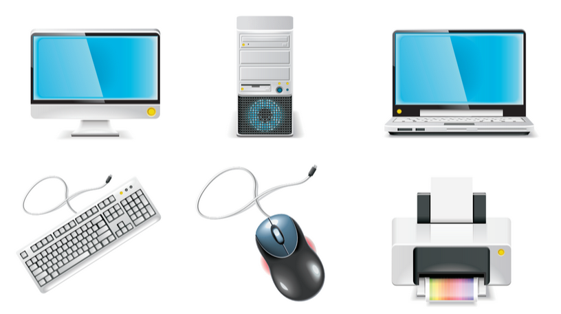
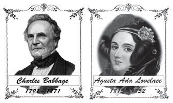
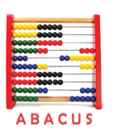

![This picture shows the generation of computer. the first generation used vacuum tube technology and were built between 1940 to 1956 the second generation of computers was developed in the late 1956 to 1963 these computers replaced vacuum tubes with transistors. the third generation of computers emerged between 1964 to 1971. this generation used Integrated Circuits. the fourth generation computers were developed in 1971 after third generation that used microprocessors. computers of fifth generation use artificial intelligence AI to perform various task and it is developed from 2001 and it is still being developed.](images/image-199.png)

To know about computers.
To know about the history of computers.
To understand the growth and development of computers.
To understand the generations of computers.
To understand the types of computers.
To apply the knowledge of computer in various fields in our day to day life.
(Boys and girls of standard VI are playing in the playground).
Siva: Hey Salim, I saw your father coming with a big parcel yesterday. I guess you could have bought a new television. Am I right?
Salim: It’s not a television Siva. We bought a new computer.
Malar: Oh, I see. computer! I had seen it used in textile shop for billing.
Selvi: Malar, not only it is used in textile shops, but also in railway stations, banks, ATM’s and in many places. It is used even in our local post offices.
Nancy: Hey! I have seen it in my school.
Salim: Is it only in your school? Nancy, I think your father is also having a computer.
Nancy: Is my father having a computer?! Without my knowledge? I am sure that my father does not have computer. He has only a mobile phone.
Salim: That’s what I say. Your father’s mobile phone is also like a computer.
Nancy: Oh no Salim? What do you mean? How can a mobile phone be compared with a computer?
Salim: Nancy, we usually think that computer should be like a big TV and a box attached with it. But computers are available in different shapes. The works which are done with a computer can also be done using a smart phone. There may be difference in their speed, but their operations remain the same. The big computers are shrunk into small smart phones nowadays because of the technological development. Most of us think that smart phones are only to make calls because of its handy look But, it is not so.
Selvi: What about laptops and tablets? Are they, same like the computers we usually think of?
Salim: Yes, they are all the same. There are different types of computers. But their performance varies according to their capacity.
Siva: That’s ok Salim, why do you need a computer in your home? What will you do in that?
Salim: I can use it to draw, paint, play games and I can learn and develop my general knowledge.
Selvi: Salim, you know more about computers!
Salim: I know very little about computers. As my father uses computer in his office, he knows much about it. I shared very little of what I have learnt from my father.
(All the children stood up when the teacher came and stood near them)
Teacher: What is going on?
Children: We are discussing about the computer sir.
Teacher: Oh, I see, that’s nice. I will explain about computers in detail. Firstly, I will explain you, what is a computer? Computer is an electronic device that processes the data and Information according to our needs. We can save the data and convert it into information. Computers are used in many ways.
Malar: We are eager to know who invented the computer.
Teacher: In the beginning of the 19th century, Charles Babbage, a professor in Mathematics designed an analogue computer. He is known as the father of computer.
The basic structure designed by him is being used in all computers. Similarly, Augusta Ada Lovelace is admired as the first programmer as she developed essential commands for the mathematical operations.

Nancy: Sir, can you tell us which device was used before the invention of computer?
Teacher: In the early stage, there was no computer. Initially the people used a tool called abacus for calculations.

Later, they started using a device called calculator for calculation.
Selvi: Wow! It’s really interesting sir. Then, when did computers come into use Sir?
Teacher: Good question Selvi. Computer didn’t come directly from abacus. The computers that we use today belongs to fifth generation.
Nancy: Oh! Were there four more generations previous to this?
Teacher: Yes Nancy, you are correct.
Siva: Sir! Can you explain us about the five generations?
Teacher: Sure, I can explain.
In the First-generation computers, Vacuum tube was used.
In the Second-generation computers, they used Transistor.
In the Third-generation computers, they used Integrated Circuits.
In the Fourth-generation computers, they used Micro-processor.
In the Fifth-generation computers Artificial Intelligence is used.
Selvi: Sir, we are eager to know more about the present computers which we use.
Teacher: Data and information are the two important elements in computers.
Malar: Sir, what is meant by data?
Teacher: Data is the information that has to be processed. It cannot be used directly by us. Generally, they are in the form of numbers, alphabet and images.
Siva: Sir… then what is information?
Teacher: Information is a form of processed data.
Siva: What is software and hardware, Sir?
Teacher: The commands or programs that are used in computer are called software. This software can be divided into two types.
1. Operating software
2. Application software. Nancy: What is Operating Software?
Teacher: Software that is used to operate the computer is called operating software. I think you are familiar with Windows and Linux.
Siva: Then, what is application software?
Teacher: Application software is a software that is used to run a particular program. For example, the software used for painting, playing games in computer.
Nancy: Oh! I have learnt much information about computers today sir.
Malar: Ok Sir, then what is hardware?
Teacher: The parts that are available in the computer that helps the software to work is a hardware.
Salim: Sir, please tell us more about it
Teacher: Yes, sure I will. Whatever we want to send to a computer is sent through a device called input device. For example, the keyboard, mouse and other input devices.
The data or information that has been sent to the computer are displayed out or reproduced through some devices. These are called as output devices. For example, printer, monitor and so on.
Nancy: Ok Sir, then what is CPU?
Teacher: It is the central processing unit. You will learn and understand more about CPU in your higher classes.
All Children together: Thank you so much, sir. Today we have learnt and understood more information about computers.
Do you Know?
(E N I A C- Electronic Numerical Integrator and Computer) was the first Computer introduced in the year 1946. This is the first General purpose computer.
1. Who is the father of computer?
a) Martin Luther King
b) Graham Bell
c) Charlie Chaplin
d) Charles Babbage
2. Which of the following is another form of computer?
a) Blackboard
b) Mobile
c) Radio
d) Book
3. When was the first computer introduced?
a) 1980
b) 1947
c) 1946
d)1985
4) Who is the computer’s first programmer?
a) Lady Wellington
b) Augusta ado Lovelace
c) Mary Curie
d) Mary Comb
5)Pick out the odd one.
a) Calculator
b) Abacus
c)Flash card
d)Laptop
1 Data is dash information.
2 World’s first general purpose computer is dash
3 Information is dash data.
4 Fifth generation computer has dash intelligence
5 Dash is the device that uses Index number.
1)Computer is an electronic device.
2) Sir Isaac Newton invented computer.
3) Computer can do calculations fast.
First generation computer - Artificial Intelligence
Second generation computer - Integrated Circuit
Third generation computer - Vacuum tubes
Fourth generation computer - Transistor
Fifth generation computer - Micro processor
1) What is a computer?
2) Who are the pioneers or forerunners of computer?
3) Write a short note on Data.
4) Name any four input devices.
5) Differentiate hardware and software.
1) Explain in detail above the applications of computer.
1. |
Abacus (அபாகஸ்) |
- |
மணிச்சட்டம் |
2. |
Computer (கம்ப்யூட்டர்) |
- |
கணினி |
3. |
Architecture |
- |
கட்டமைப்பு, வடிவமைப்பு |
4. |
Command |
- |
கட்டளை |
5. |
Calculator |
- |
கணிப்பான், கணக்கிடும் கருவி |
6. |
Cell Phone, Mobile (செல்போன்) |
- |
கைபேசி, அலைபேசி |
7. |
Tablet (டேப்லட்) |
- |
கைக்கணினி, வரைப்பட்டிகை |
8. |
Data |
- |
தரவு, முறைப்ப்டுத்தபட வேண்டிய விவரங்கள் |
9. |
Information |
- |
தகவல் முறைபடுத்தப்பட்ட விவரங்கள் |
10. |
Electronic Machine |
- |
மின்னணு இயந்திரம், மின்சாரத்தால் இயங்கும் இயந்திரம் |
11. |
Analog computer (அனலாக் கம்ப்யூட்டர்) |
- |
குறியீட்டு எண்களைப் பயன்படுத்தி கண்க்கிடும் கருவி |
12. |
Smart phone (ஸ்மார்ட போன்) |
- |
திறன் பேசி |
13. |
Post Office |
- |
தபால் நிலையம் |
14. |
Automated Teller Machine (ATM) |
- |
தானியங்கி பண எந்திரம் |
15. |
Keyboard |
- |
விசைப்பலகை |
16. |
Software |
- |
மென்பொருள் |
17. |
Hardware |
- |
வன்பொருள் |
18. |
Printer |
- |
அச்சுப் பொறி |
19. |
Mouse |
- |
சுட்டி |
20. |
Program |
- |
நிரல் |
21. |
Programmer |
- |
நிரலர் |
1 Measuring Tape - அளவு நாடா
2 Stop clock - நிறுத்துக் கடிகாரம்
3 Measuring jar - அளவுசாடி
4 Unit - அலகு
5 Parallax error - இடமாறு தோற்றப்பிழை
6 Mass - நிறை
7 Weight - எடை
8 Animate factors - உயிருளள காரணிகள்
9 Inanimate factors - உயிரற்ற காரணிகள்
10 Contact forces - தொடு விசைகள்
11 Non-contact forces - தொடாவிசைகள்
12 Linear motion - நேர்கோட்டு இயக்கம்
13 Curvilinear motion - வளைவுப்பாதை இயக்கம்
14 Circular motion - வட்டப்பாதை இயக்கம்
15 Rotatory motion - சுழற்சி இயக்கம்
16 Oscillatory motion Zigzag (Irregular) - அலைவு இயக்கம்
17 motion - ஒழுங்கற்ற இயக்கம்
18 Average speed - சராசரி வேகம்
19 Periodic motion - கால ஒழுங்கு இயக்கம்
20 Non-periodic motion - கால ஒழுங்கற்ற இயக்கம்
21 Uniform motion - சீரான இயக்கம்
22 Non-uniform motion - சீரற்ற இயக்கம்
23 Artificial Intelligence - செயற்கை நுண்ணறிவு
24 Nano robotics - நானோ எந்திரவியல்
25 Diffusion - விரவுதல் பரவுதல்
26 Liquefaction - நீரமமாக்கல்
27 Compressible - அழுத்தப்படக்கூடிய
28 Unadulterated - கலப்படமற்ற
29 Components - பகுதிப்பொருட்கள்
30 Proportion - விகிதம்
31 Extraction - பிரித்தெடுத்தல்
32 Strainer - வடிகட்டி
33 Churning - கடைதல்
34 Threshing - கதிரடித்தல்
35 Winnowing - தூறறுதல்
36 Sedimentation - படியவைத்தல்
37 Decantation - தெளியவைத்து இறுத்தல்
38 Filtrate - வடிநீர
39 Reaction - வினை
40 Dissolution - கரைத்தல்
41 Sublimation - பதங்கமாதல்
42 Melting - உருகுதல்
43 Vaporization - ஆவியாக்குதல்
44 Condensation - ஆவி சுருங்கல்
45 Freezing - உறைதல்
46 Terminal bud - நுனி மொட்டு
47 Auxiliary buds - கோண மொட்டு
48 Nodes - இலைக்கணு
49 Tendril - பற்றுக்கம்பி
50 Twiners - தழுவுகொடி
51 Thorns - முள்
52 Adaptation - தகவமைப்பு
53 Bio diversity - பல்லுயிர்த்தன்மை
54 Eco system - சூழியல் மணடலம்
55 Migration - இடம் பெயர்வு
56 Abiotic community - உயிருள்ள சமூகம்
57 Biotic community - உயிரற்ற சமூகம்
58 Malnutrition - ஊட்டச்சத்துக் குறைவு
59 Deficiency diseases - குறைபாட்டு நோய்கள்
60 Hygiene - சுகாதாரம்
61 Personal Hygiene - தன் சுத்தம்.